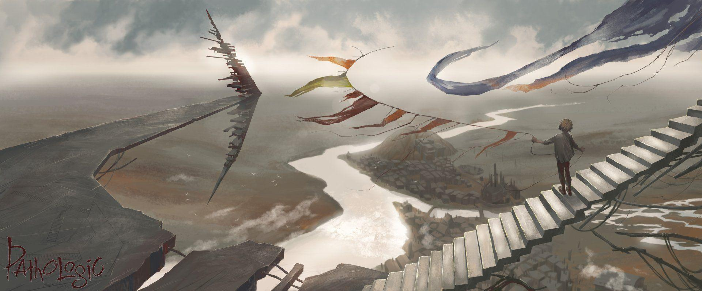
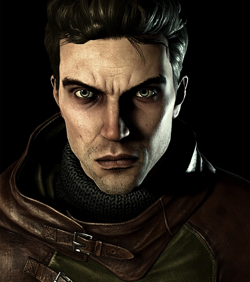
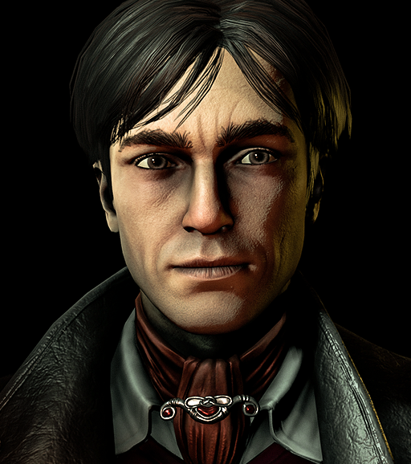
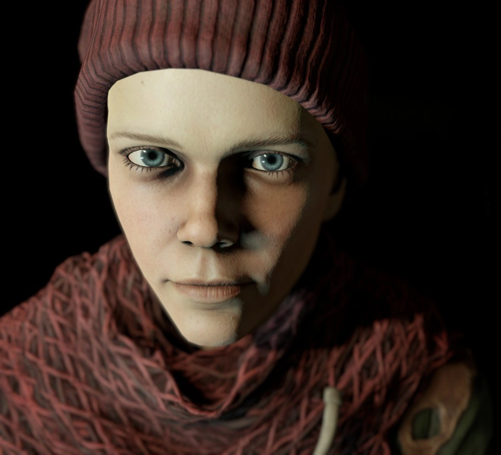

A Cidade não é um cenário — é uma comunidade com nomes, histórias e hábitos. Cada pessoa que morre foi alguém. Cada pessoa que sobrevive custou algo de outra. Este é o elenco que habita os doze dias.

Artemy retorna à sua cidade natal às pressas após receber um telegrama misterioso. Chega para encontrar o pai morto e a si mesmo acusado do crime. Criado numa tradição de açougueiros-curandeiros que enxergavam no corpo uma linguagem sagrada, ele busca a cura da Praga nas raízes que crescem sob os ossos da estepe — os chamados twyre.
"Meu pai me disse uma vez que a Cidade é um organismo vivo. Que tem veias e pulmões e um coração que bate. Eu achei que era metáfora."
Seu método é visceral e intuitivo, enraizado em conhecimento místico que a ciência formal rejeita. Entre os Kin ele é filho de um mestre. Para os moradores urbanos é um estranho com mãos manchadas de sangue.

Dankovsky chegou à Cidade antes da Praga com uma missão que nada tem a ver com ela: estudar Isidor Burakh, um homem que, segundo boatos, não havia envelhecido em décadas. A morte de Isidor arruinou seus planos e a Praga o prendeu. Agora enfrenta uma epidemia com as únicas ferramentas que conhece: razão, método e uma arrogância mal disfarçada.
"Vim aqui para estudar a vida. Em vez disso, estou catalogando a morte. Talvez seja a mesma pesquisa."
Sua relação com Artemy começa em suspeita mútua e pode evoluir para uma aliança improvável. Os dois representam paradigmas opostos de cura — e o jogo os obriga a negociar entre eles.

Clara não tem sobrenome. Não tem passado verificável. Afirma curar pelo toque — e há testemunhas que confirmam isso. Mas há também quem a chame de charlatã, impostora, talvez algo pior. Ela circula pela Cidade com uma liberdade que os outros dois protagonistas não têm, talvez porque ninguém sabe ao certo o que ela é.
"Não sei se sou real. Mas as pessoas que curei eram. Isso basta por agora."
Seu papel na narrativa é deliberadamente opaco. Nas histórias originais de Pathologic, a Noiva representa algo entre um anjo e um vírus — uma presença que tanto cura quanto contamina dependendo de como é lida.
Pai de Artemy e figura central da tradição Kin. Médico, açougueiro, filósofo — tudo ao mesmo tempo. Já estava morto quando o jogo começa, mas sua sombra atravessa cada dia dos doze. Dankovsky veio até a Cidade para estudá-lo. Artemy retornou para enterrá-lo. A Praga pode ter começado com ele.
Uma das três figuras que governam a Cidade de fato — não por título, mas por influência. Maria representa a velha aristocracia local: elegante, implacável e convencida de que a Cidade tem um destino superior. Seu relacionamento com Artemy é de condescendência cuidadosa.
Matriarca dos Sabaneievi e guardiã da elite cultural da Cidade. Governa o Theatro como uma corte paralela, onde os intelectuais debatem enquanto o povo morre. Sua indiferença às mortes dos pobres é estrutural, não pessoal — o que a torna mais assustadora.
Proprietário do Matadouro e da maior parte da indústria local. Pragmático até a crueldade. Sua lógica é a do lucro — e em tempos de praga, isso o torna tanto um obstáculo quanto um recurso para Artemy, dependendo do dia.
Filha de um médico já morto, Lara administra sua casa como ponto de refúgio para infectados que a medicina oficial recusa. Pragmática e corajosa, ela é uma das aliadas mais confiáveis de Artemy — e das mais difíceis de manter viva, por tomar riscos que outros evitam.
Um dos dois irmãos Stamatin — arquitetos que deixaram a Capital para construir algo impossível na estepe. Andrei comanda a Taverna dos Gêmeos. Seu irmão Peter raramente sai da Torre Poliedra. Juntos, representam a contradição entre sonho e execução.
Líder espiritual e política do povo Kin — os açougueiros que habitam os Barracos ao sul da Cidade. Sua relação com Artemy é de expectativa: ele é o filho de Isidor, logo, deve assumir o papel do pai. Ela cobra isso sem misericórdia.
Chega com ordens do governo: conter a praga por qualquer meio necessário. "Qualquer meio" inclui queimar casas e executar infectados. Representa o Estado — racional, violento e totalmente desconectado do que a Cidade realmente é.
Médico que estudou com Artemy e ficou na Cidade. Conhece os dois mundos — a ciência ocidental e a tradição Kin. Isso o torna inestimável e impossível de confiar completamente, pois nunca fica claro de qual lado ele está quando o custo é alto.
Onze crianças · Uma Cidade · O futuro que não pode ser salvo por inteiro
As crianças de Pathologic 2 não são inocentes no sentido convencional. Elas conhecem a Cidade melhor que os adultos, trocam informações, guardam segredos e algumas podem ser aliadas mais úteis que os grandes nomes do elenco. São também os personagens mais impossíveis de proteger — e o jogo sabe disso.
| Personagem | Relação | Status |
|---|---|---|
| Isidor Burakh | Pai · Já morto ao início | Central |
| Daniel Dankovsky | Rival e possível aliado — interesses parcialmente sobrepostos | Variável |
| Clara | Desconfiança mútua — metodologias incompatíveis | Ambígua |
| Lara Ravel | Aliada confiável · Arrisca a vida pela causa | Aliada |
| Taya Tycheek | Expectativa pesada — cobra o papel do pai | Pressão |
| Maria Kaina | Condescendente · Pode ajudar se lhe for útil | Condicional |
| Alexandr Sabanieiev | Transacional · Recursos em troca de serviços | Condicional |
| O Militar | Obstáculo — pode sabotar a cura | Tensão |
| Rubin | Colega · Lealdade incerta sob pressão | Incerto |
| Notkin | Líder infantil · Conhece a Cidade por dentro | Útil |